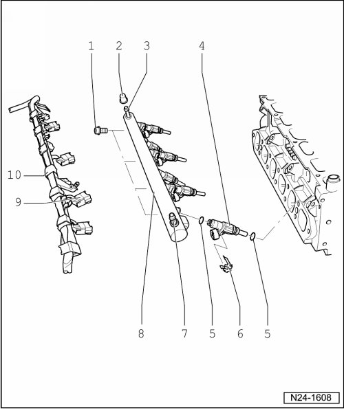

Fuel Rail: Service and Repair
Fuel Rail, Assembly Overview

1 10 Nm
2 Protective cap
3 Breather valve
• For checking fuel pressure
• For bleeding fuel system
4 Cylinder 6 fuel injector (N84)
• Checking --> [ Fuel Injectors, Checking ] Testing and Inspection.
5 Seal
• Replace
6 Retaining clip
• Check for secure seat
7 Supply line connection
8 Fuel rail
9 Connector
• Black, 2-pin
• Check for secure seat
10 Wiring harness
• With harness connectors for fuel injectors
• Clipped into wiring channel